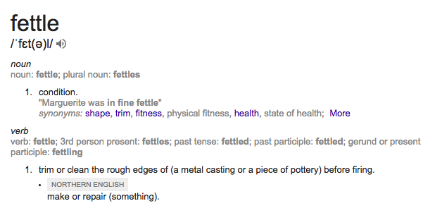

Testing a Tool That Tests Tests
"De Magere Compagnie" by Frans Hals, photo from wikipedia.org
“...77% of the failures can be reproduced by a unit test”
https://www.usenix.org/system/files/conference/osdi14/osdi14-paper-yuan.pdf
“...we can prevent many serious bugs by just writing unit tests”
More Comprehensive Unit Tests

TDD
Write a failing test
Make it pass
Refactor
TDD
Write a failing test
Test coverage + TDD = Profit? 💰
It's a great start
public static bool IsItTeaTimeYet(
int hour)
{
return hour > 5 && hour < 22;
}
[Test]
public void Perfect_tea_time()
{
Assert.That(
Tea.IsItTeaTimeYet(3),
Is.False);
Assert.That(
Tea.IsItTeaTimeYet(12),
Is.True);
}
All code covered 😬
Mutation testing 👾
public static bool IsItTeaTimeYet(
int hour)
{
return hour >= 5 && hour < 22; // '> 5' mutated to '>= 5'
}
[Test]
public void Perfect_tea_time()
{
Assert.That(
Tea.IsItTeaTimeYet(3),
Is.False);
Assert.That(
Tea.IsItTeaTimeYet(12),
Is.True);
}
Mutants survived 👾
2 mutant(s) survived!
(1) \MutationTestingExample\TeaTime.cs:8
original: return hour > 5 && hour < 22;
mutated: return hour >= 5 && hour < 22;
(2) \MutationTestingExample\TeaTime.cs:8
original: return hour > 5 && hour < 22;
mutated: return hour > 5 && hour <= 22;
Profit? 💰
Red-green-refactor requires discipline
Test coverage = code was run
Java
JavaScript
Ruby
PHP
...and C# ?
How hard could it be?
Fettle

From google dictionary
What does it need to do?
Mutate the code
Run the tests
.NET Framework
NUnit 3
Mutate the code
CIL
public static int Sum(int a, int b)
{
return a + b;
}
IL_0000: nop
IL_0001: ldarg.0
IL_0002: ldarg.1
IL_0003: add # the interesting bit
IL_0004: stloc.0
IL_0005: br.s IL_0007
IL_0007: ldloc.0
IL_0008: ret
First Pass
Finds gaps in our tests 👍
False positives 😬
Takes hours 😬
string result = "";
switch (input)
{
case "a": result = "F"; break;
case "b": result = "G"; break;
case "c": result = "H"; break;
...
case "j": result = "O"; break;
}
string result = "";
uint num = .ComputeStringHash(input);
if (num <= 3826002220u)
{
if (num <= 3775669363u)
{
if (num != 3758891744u)
{
...
🤔
Roslyn
public static int Sum(int a, int b)
{
return a + b;
}
MethodDeclaration
PublicKeyword
StaticKeyword
...
Block
OpenBraceToken
ReturnStatment
ReturnKeyword
AddExpression
IdentifierName // 'a'
PlusToken // '+'
IdentifierName // 'b'
SemicolonToken
CloseBraceToken
Second Pass
Finds gaps in our tests 👍
False positives 👍
Takes hours 😬
Optimisations
Stop on first failure
NUnit API
for every class
for every method
for every instruction
run all the tests
😱
Only run relevant tests
MethodA | TestX |
|
MethodB | TestY |
|
MethodC | TestZ |
TestX |
||
MethodB | TestY |
|
MethodC | TestZ |
MethodA | TestX |
|
TestY |
||
MethodC | TestZ |
TestX |
||
TestY |
||
MethodC | TestZ |
TestX | MethodB, MethodC |
|
TestY | MethodA, MethodC |
|
TestZ | MethodC |
MethodA | TestY |
|
MethodB | TestX |
|
MethodC | TestX, TestY, TestZ |
How to tell?
public static bool IsItTeaTimeYet(
int hour)
{
return hour > 5 && hour < 22;
}
public static bool IsItTeaTimeYet(
int hour)
{
Console.WriteLine(
"Fettle: d3044986-2942-4d5b-b157-99c0d9488f54");
return hour > 5 && hour < 22;
}